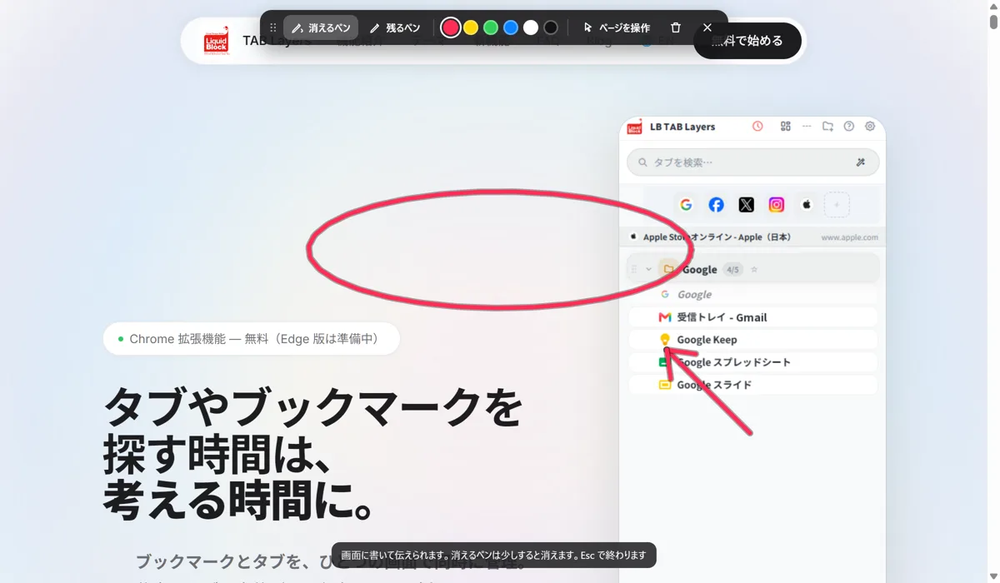

消えるペンは、Alt+Shift+D で出します。ページの上にそのまま丸や線を書けて、書いた線は少しすると消えます。画面共有の最中に「ここです」と指し示す、レーザーポインターの代わりに使えます。Esc で終わります。
📌 消えるペンは 3.0.3 から使えます。無料の機能です。
オンラインの打ち合わせで画面を見せながら、「右上の、その下の、青いボタンの……」と言葉で場所を伝える。聞いている側は、カーソルを目で追うしかありません。ページの上に丸を書けば、ひと目で伝わります。
出し方は3つ
- Alt+Shift+D を押す
- ページを右クリックして「消えるペンで書く」
- サイドパネルの上のペンのボタン
出すと、画面に小さな道具の帯が出ます。あとは、ページの上でドラッグするだけです。
道具の帯でできること
| 道具 | 働き |
|---|---|
| 消えるペン | 書いた線が、少しすると消えます。指し示すときに |
| 残るペン | 「すべて消す」を押すまで残ります。説明しながら書き足すときに |
| ページを操作 | ペンを止めて、下のページを触れます。動画の再生ボタンを押すときなどに |
| 色 | 線の色を変えます |
| すべて消す | 書いた線を消します。C キーでも消せます |
| 閉じる | ペンを終わります。Esc キーでも終われます |
帯が書きたい場所に重なったら、ドラッグで動かせます。
使いどころ
- 画面共有での説明：「この数字を見てください」と丸で囲む
- デザインの確認：「ここの余白を広げたい」と線を引く
- 操作の案内：「次はここを押します」と矢印を書く
書いた内容を残して相手に渡したいときは、スクリーンショットに番号と指示を書く「修正指示」が向いています。くわしくは 【機能ガイド】修正指示へ。
なぜ「消える」のか
指し示すだけなら、線は残らないほうが楽です。残る線は、次の話に移るたびに消す手間が入り、話の流れが止まります。消えるペンは、書いたそばから消えていくので、消すことを考えずに、話しながら書けます。書いたものを残して説明したいときだけ、残るペンに切り替えます。
知っておきたいこと
- 書けないページがあります：Chrome の設定画面や、Chrome ウェブストアなどには書けません
- 書いた内容は、保存も送信もしません。ペンを閉じると、何も残りません
- キーを変えたいとき：ショートカットキーの設定から変えられます
🎬 消えるペンのほかにも、いろいろできます。パネルを開く、保存したタブを開く、閉じたタブを履歴から戻す、ページにひもづけたメモ、ピンバーまで。ブラウザとパネルの動きをそのまま見られる 操作ガイド（動く画面で見る10の操作） にまとめています。入れたばかりの方は クイックチュートリアル（5分） からどうぞ。
よくある質問
Q. 画面共有しながら、Web ページの上に書き込めますか？
書き込めます。LB TAB Layers の消えるペンを Alt+Shift+D で出すと、ページの上に丸や線を書けます。書いた線は、少しすると消えます。
Q. 書いた線を、残しておけますか？
「残るペン」に切り替えると、「すべて消す」を押すまで残ります。ペンを閉じると消えます。
Q. ペンを出したまま、ページのボタンを押せますか？
「ページを操作」を押すと、ペンが止まって、下のページを触れます。もう一度ペンを選ぶと、続きを書けます。
Q. 書いた内容は、どこかに保存されますか？
されません。書いた内容は、保存も送信もしません。
Q. 無料で使えますか？
はい。消えるペンは無料の機能です。
▶ 実際の操作を動画で見る
サイドバーで、ブックマークとタブをいっしょに管理する様子です。